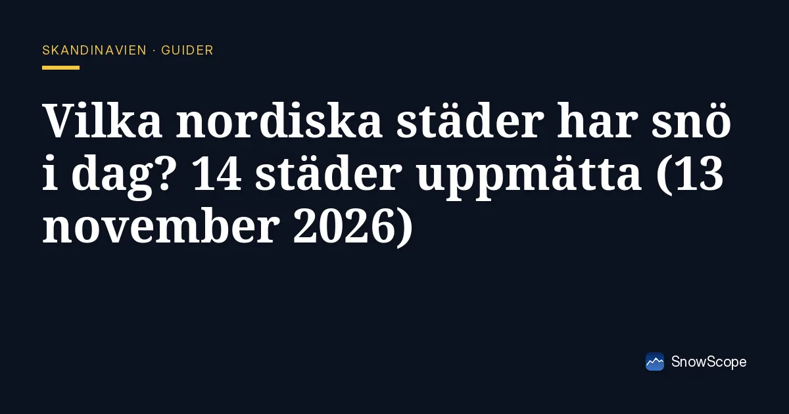

Vilka nordiska städer har snö i dag? 14 städer uppmätta (13 november 2026)
Fredagsmorgonen visade att snögränsen löpte nord-syd snarare än öst-väst, med Botniska kusten och inlandet Sverige mycket vitare än polcirkeln. En mätning av 14 stora städer från Bergen till Tromsø visar ett vinterlandskap i omställning: vissa platser helt begravda under snö, andra fortfarande gröna, och en långt upp i norr utan snö alls.
Se snöprognosen för Scandinavia live i SnowScope-appenSnödjup, pudervarningar och 3D-kartan, gratis.
Den vita zonen: höjder ovan Oslo leder; Umeå och Östersund följer
Oslos höjdfördelar är slående. Stadscentrum vid Blindern ligger på bara 4 cm, det djup som mättes vid värstationen. Men 8 km norr ut, uppe på Tryvannshøgda på 528 m, når snön 37 cm. Det är det djupaste värdet bland alla 14 städer. Mönstret är tydligt: ju högre upp, desto mer snö.
På kustslätten toppar Umeå listan med 20 cm vid Röbäcksdalen vid stadskanten. Nästan all snö kom på två dagar; marken var bar på onsdagen. Östersunds värden varierar med plats: 19 cm på Norderön och 24 cm på Marby, båda vid sjöstationer som följde samma storm som drabbade Umeå. Ingen av städerna hade mätbar snö för fyra dagar sedan.

Tromsø och norra höjdernas fjäll
Tromsøs stadsstation på ön visar 6 cm, men går man 45 km söderut in i fjällen mättes 44 cm på Lyngen Gjerdvassbu på 710 m. Det visar skillnaden mellan arktisk kust och inlands toppar. Staden själv är tunnsnöad; de höga dalarna samlar årets snöackumulation.
Kustsamhällena långt upp i norr—Bardufoss, Nordstraum—har 3 till 8 cm. I denna region har de flesta vintrar snö redan i mitten av november, men i år är täcket fläckigt. Luleå airport skickade ingen mätning, men fem närmaste stationer 35 till 60 km bort visar 3 till 7 cm, allt nytt sedan torsdag.
Trondheim: en stad mellan kust och dal
Trondheims stadsstationer rapporterar ingen snödjup alls. Fjordkanten ligger fortfarande bar. Men går man inåt och uppåt dyker snön upp: 5 cm på Meråker 67 km österut, och 18 cm på Tågdalen 78 km sydväst på 415 m höjd. Staden ligger i regionens torraste fack, skyddad från de stormar som har dränkt fjällen.
Redan fredagskvällen kan Trondheim själv fortfarande ligga snöfritt, samtidigt som de höga rutterna och inlands skogarna är vita. Det är typiskt för mitten av november på Trøndelags kust.
Kirunas försvinnande och det arktiska överraskningsmoment
Kiruna bryter alla förväntningar. Stationen på 519 m visar 0 cm, liksom Jukkasjärvi och Esrange. Det är extraordinärt. SnowScopes historia visar att Kiruna har haft snö på detta datum i alla 46 tidigare vintrar med uppmätningar, med en median på 23 cm. I fjol på denna tid låg den på 24 cm. I år: ingenting.
Det bredare mönstret norr om polcirkeln visar samma chock. Av 22 svenska stationer norr om latitud 66°N mätte bara 5 någon snö alls, och det djupaste är bara 9 cm. Den kalla arktiska luften har kommit utan fukt för att bygga upp en täcke.
Gröna städer: södern håller sitt grepp
Stockholm, Göteborg, Helsingfors, Tammerfors och Bergen är alla snöfria. Ingen snö vid centralstationerna i någon av dessa huvudstäder, vilket är normalt för mitten av november. Den närmaste vita flacken till Stockholm ligger 75 km norrut. Gunntorp, inåt från Göteborg, har 12 cm—det djupaste snölaget söder om 60:e breddgraden—men själva kusten förblir grön.
Bergen på havsnivå vid västkusten är torrt utan snö. Höjderna ovan Bergen—Kvamskogen och Mjølfjell—har 5 till 10 cm, men själva staden ligger en vecka eller mer från sitt första bestående snölager.
Veckoslutsprognosen: snö för höjderna, regn för kusterna
Norr får ett litet tillskott. Tromsø och Kiruna förväntas få omkring 2 cm. Rovaniemi, längre söderut men inåt landet, kan få omkring 5 cm. Umeå och Östersund förblir torra och kalla.
Södern blir mildare och blötare. Bergen väntar håll regn på lördag och söndag, omkring 40 mm, som kommer att stryka bort all tunn tidig snö i låga dalar. Den kyla som låste in mittsvensksnön börjar lätta. Snögränsen stannar ungefär där den ligger nu: över mitten av Skandinavien, med arktisk kust kall men snöfri och södra huvudstäder fortfarande väntande på att november ska kännas som vinter.
Tips för skidåkare
- För att hitta vit mark i en nordisk stad denna helg, åk norrut: Umeå, Östersund och Rovaniemi är dina säkraste väl. Tromsø och Kiruna får några centimeter till men förblir tunnsöade.
- I Oslo, gå inte genom stadscentrum och leta efter snö. Ta tunnelbanan norrut till Nordmarka; snön finns i höjderna, inte på gatorna.
- Kiruna-besökare: staden ligger snöfri i dag. Om du behöver snö, kör inåt mot norska gränsen och fjälldalar, där 44 cm ligger på Lyngen Gjerdvassbu.
- I södern—Stockholm, Göteborg, Helsingfors, Bergen—acceptera att snö ligger veckor framåt. Det är normalt för mitten av november. Tidig säsongssnö är tunn och ojämn; stenar ligger tätt under.
- Följ prognosen för helgen. Bergen får regn; Arktis blir kallt. Snögränsen skärps snarare än tonas ned.
Om siffrorna
Snödjupen för skidorterna är det djupaste snötäcket på ortens övre backar på det angivna datumet; de är uppskattningar för ett område, inte en mätning på en punkt. Prognoser kan ändras. Läs alltid den officiella lavinprognosen innan du åker offpist.
Citera den här rapporten
För forskning, undervisning eller press: siffrorna och diagrammen får återanvändas fritt under CC BY 4.0 med den här källhänvisningen.
SnowScope (2026), Vilka nordiska städer har snö i dag? 14 städer uppmätta (13 november 2026), https://snowscope.app/blog/sv/2026/11/nordic-cities-snow-today-13-november-2026.html, hämtad 2026-11-13
SnowScope (Atlas Labs). (2026, November 13). Vilka nordiska städer har snö i dag? 14 städer uppmätta (13 november 2026). SnowScope snow reports. https://snowscope.app/blog/sv/2026/11/nordic-cities-snow-today-13-november-2026.html
BibTeX
@misc{snowscope2026nordiccitiessnowtoday13n,
author = {{SnowScope (Atlas Labs)}},
title = {Vilka nordiska städer har snö i dag? 14 städer uppmätta (13 november 2026)},
year = {2026},
month = nov,
howpublished = {\url{https://snowscope.app/blog/sv/2026/11/nordic-cities-snow-today-13-november-2026.html}},
note = {Published 2026-11-13 18:09 UTC; accessed 2026-11-13}
}· CC BY 4.0 · Metoder, data och verktyg →
Följ Scandinavia
Gratis: ett meddelande när nysnö är på väg, och prognosen varje morgon.